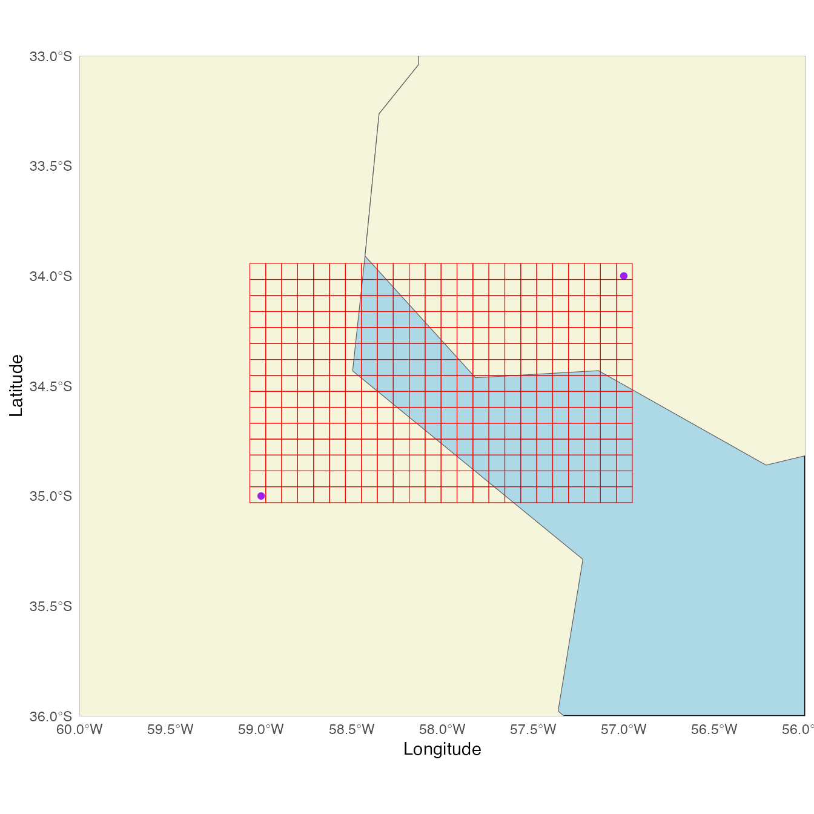

Generating a Raster Image from Quadkey-Identified Data
Source:vignettes/B-from_quadkey_identified_data_to_raster.Rmd
B-from_quadkey_identified_data_to_raster.RmdPlease, visit the README for general information about this package
Create a raster from variables reported by QuadKeys for a specified
map area and zoom level. A detailed explanation of what tile coordinates
(tileX, tileY) and pixel coordinates
(pixelX, pixelY) are can be found in
quadkeyr vignette Bing
Maps Tile System Functions and in the official
documentation.
Step 1: Create a grid of QuadKeys
1.1 Define the area
First, we should define the xmin, xmax and
, ymin and ymax that will delimit the area for
the QuadKey grid creation.
For this example, we have selected xmin = -59,
xmax = -57 , ymin = -35 and ymax
= -34. Let’s plot them as points.

1.2 Select the zoom level.
The QuadKey grid can have a zoom level between 1 (less detail) to 23 (more detail).
The function create_qk_grid will return three
outputs:
grid$dataa dataframe withtileX,tileYand the QuadKey value for each element of the gridgrid$num_rowsthe number of rows andgrid$num_colsthe number of columns of the grid.
grid <- create_qk_grid(
xmin = -59,
xmax = -57,
ymin = -35,
ymax = -34,
zoom = 12)
head(grid$data)
#> # A tibble: 6 × 3
#> tileX tileY quadkey
#> <dbl> <dbl> <chr>
#> 1 1376 2473 210321302002
#> 2 1377 2473 210321302003
#> 3 1378 2473 210321302012
#> 4 1379 2473 210321302013
#> 5 1380 2473 210321302102
#> 6 1381 2473 2103213021031.3 Get the grid coordinates from the QuadKeys
The coordinates are extracted from the QuadKeys using the function
get_qk_coords()
grid_coords <- get_qk_coord(data = grid$data)
head(grid_coords)
#> Simple feature collection with 6 features and 3 fields
#> Geometry type: POINT
#> Dimension: XY
#> Bounding box: xmin: -59.0625 ymin: -34.958 xmax: -58.62305 ymax: -34.958
#> Geodetic CRS: WGS 84
#> # A tibble: 6 × 4
#> tileX tileY quadkey geometry
#> <dbl> <dbl> <chr> <POINT [°]>
#> 1 1376 2473 210321302002 (-59.0625 -34.958)
#> 2 1377 2473 210321302003 (-58.97461 -34.958)
#> 3 1378 2473 210321302012 (-58.88672 -34.958)
#> 4 1379 2473 210321302013 (-58.79883 -34.958)
#> 5 1380 2473 210321302102 (-58.71094 -34.958)
#> 6 1381 2473 210321302103 (-58.62305 -34.958)We can visualize the points in the map to understand better the results.
 We have a grid of points representing the QuadKeys. Remember that these
points represent the upper-left corner of each QuadKey, which might give
the impression that they do not precisely cover the entire area defined
by the initial points.
We have a grid of points representing the QuadKeys. Remember that these
points represent the upper-left corner of each QuadKey, which might give
the impression that they do not precisely cover the entire area defined
by the initial points.
1.4 Conversion to polygons
Now, let’s proceed to create the polygons.
polygrid <- grid_to_polygon(grid_coords)
head(polygrid)
#> Simple feature collection with 6 features and 1 field
#> Geometry type: POLYGON
#> Dimension: XY
#> Bounding box: xmin: -57.48047 ymin: -34.01624 xmax: -56.95312 ymax: -33.94336
#> Geodetic CRS: WGS 84
#> quadkey geometry
#> 1 210321132133 POLYGON ((-57.04102 -34.016...
#> 2 210321132132 POLYGON ((-57.12891 -34.016...
#> 3 210321132123 POLYGON ((-57.2168 -34.0162...
#> 4 210321132122 POLYGON ((-57.30469 -34.016...
#> 5 210321132033 POLYGON ((-57.39258 -34.016...
#> 6 210321132032 POLYGON ((-57.48047 -34.016...
It worked! As you can see here, the coordinates we randomly selected as a starting point are situated within the polygons, but not at a specific position inside each polygon. This was expected, you can read about Quadkey conversion in the vignette Bing Maps Tile System Functions.
If you want to see the grid, you can also check the app:

1.5 Raster creation
Let’s generate the raster. The data_provided dataset
consists of QuadKeys linked to a variable value. While this dataset
contains QuadKeys within our defined study area and zoom level, not all
grid QuadKeys are present.
data('data_provided')
head(data_provided)
#> quadkey variable
#> 1 210321132133 0.22
#> 2 210321132311 0.56
#> 3 210321132313 0.27
#> 4 210321132331 0.06
#> 5 210321132333 0.88
#> 6 210321310111 0.22I merge polygrid and data_provided using
QuadKey as the key. Please note that data_provided
shouldn’t be an sf dataset with a geometry column for this
join to be executed correctly.
data_raster <- polygrid |>
dplyr::inner_join(data_provided,
by = c('quadkey'))
head(data_raster)
#> Simple feature collection with 6 features and 2 fields
#> Geometry type: POLYGON
#> Dimension: XY
#> Bounding box: xmin: -57.48047 ymin: -34.01624 xmax: -56.95312 ymax: -33.94336
#> Geodetic CRS: WGS 84
#> quadkey variable geometry
#> 1 210321132133 0.22 POLYGON ((-57.04102 -34.016...
#> 2 210321132132 0.79 POLYGON ((-57.12891 -34.016...
#> 3 210321132123 0.12 POLYGON ((-57.2168 -34.0162...
#> 4 210321132122 0.92 POLYGON ((-57.30469 -34.016...
#> 5 210321132033 0.47 POLYGON ((-57.39258 -34.016...
#> 6 210321132032 0.96 POLYGON ((-57.48047 -34.016...Now, we can use the dataframe to create the raster.
raster <- create_stars_raster(template = data_raster,
nx = grid$num_cols +1,
ny = grid$num_rows +1,
data = data_raster,
var = 'variable')
raster
#> stars object with 2 dimensions and 1 attribute
#> attribute(s):
#> Min. 1st Qu. Median Mean 3rd Qu. Max.
#> variable 0 0.22 0.49 0.5028611 0.76 1
#> dimension(s):
#> from to offset delta refsys point x/y
#> x 1 24 -59.06 0.08789 WGS 84 FALSE [x]
#> y 1 15 -33.94 -0.07244 WGS 84 FALSE [y]
# In case you want to save it:
# write_stars(obj = raster,
# dsn = "raster.tif")